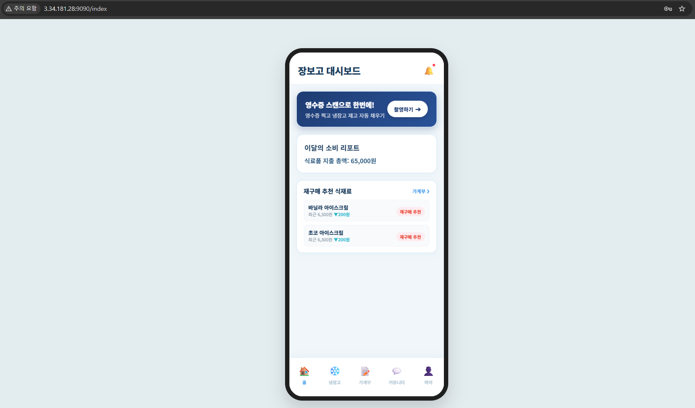
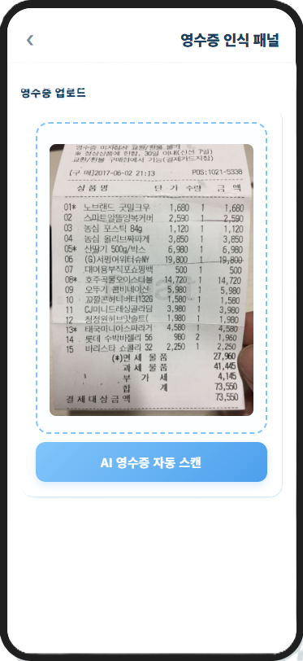
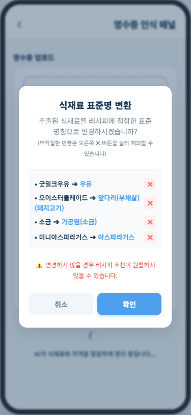
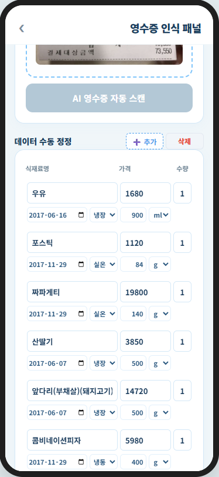
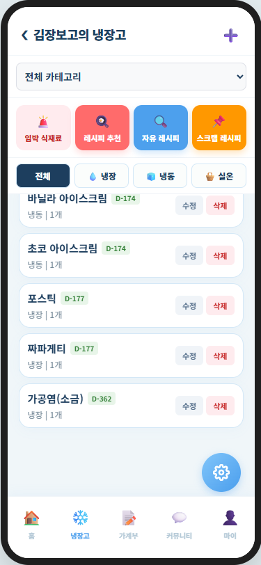

Jangbogo
Google Vision OCR & Spring AI 기반 영수증 자동 인식 스마트 냉장고 재고 관리 및 레시피 추천 플랫폼

1. 프로젝트 개요
개요
기존 식재료 관리 서비스는 수많은 품목과 유통기한을 일일이 수동으로 입력해야 하는 번거로움과, 보유 재료 기반 레시피 추천 및 지출 리포트와의 수월한 연동 부족이라는 한계가 있었습니다.
이를 해결하고자 Google Cloud Vision OCR 텍스트 추출, Spring AI 영수증 자동 정제, 냉장고 재고 자동 적재, 알레르기 및 보유 재료 기반 투트랙 레시피 매칭 엔진, 스마트 가계부 및 요리 시 식재료 자동 차감을 결합한 Jangbogo 플랫폼을 기획하고 개발했습니다.
비회원 (Guest)
서비스 진입 시 로그인 화면으로 리다이렉트
(회원가입, 계정 찾기 접근 허용 / 모든 주요 서비스는 로그인 필수)
일반 회원 (Member)
영수증 OCR 스캔 및 AI 자동 적재, 냉장고 재고/유통기한 관리,
맞춤형 레시피 매칭, 스마트 가계부 및 요리 시 식재료 자동 차감 이용
관리자 (Admin)
커뮤니티 신고 내역 심사 및 게시글 강제 삭제, 악성 유저 제재/사면,
공지사항 등록, OCR 성공률 및 API 시스템 통계 관리 권한 보유
2. 프로젝트 분석 및 기획
Jangbogo 서비스의 요구사항 및 기능 명세서를 분석하고, 일정(WBS)과 역할 분담을 체계적으로 수립했습니다.
- 요구사항 수립: OCR 영수증 추출 정확도 보정, Spring AI 기반 품목명/단가/유통기한 파싱 규칙, 레시피 매칭 알고리즘 및 식재료 차감 연동 정의
- 주요 기능 명세: Vision OCR & AI 영수증 정제, 냉장고 재고 D-Day 관리, 알레르기 차단 레시피 추천, 스마트 소비 가계부 및 요리 시 식재료 자동 차감
3. 시스템 설계
Vision OCR과 Spring AI(Claude/Gemini/Grok) 연동 파이프라인 및 계층형 백엔드 아키텍처를 설계했습니다.




- 데이터베이스 설계: 회원, 냉장고, 재고품목, 식재료 메타, 가계부 영수증, 공공/유저 레시피, 커뮤니티, 신고, 알림 등 도메인 데이터 구조 설계
- API 및 아키텍처 설계: 3계층 구조로 역할을 분리하고 일관된 통신을 위한 공통 Success/Error DTO 규격 정의
- 영수증 및 수량 차감 연동: Vision OCR + Spring AI 데이터 정제, 가계부-냉장고 일괄 적재, 요리 시 식재료 자동 차감 모듈 설계
4. 개발 및 트러블슈팅
개발 진행 과정에서 직면한 주요 기술적 이슈와 해결 과정입니다.
1. 영수증 OCR 비정형 텍스트 및 품목명·할인 단가 인식 오차
• 문제 상황: 영수증 스캔 시 제조사 수식어, 용량 문구, 행사 할인 항목이 섞여 정확한 식재료명과 개당 단가를 파싱하지 못하는 현상 발생.
• 원인 분석: 영수증 프린터의 마트별 라인 포맷 다양성 및 행사 할인이 품목 전체 수량 라인에 한꺼번에 적용되는 구조적 문제.
• 해결 방법: Spring AI System Prompt에 개당 단가 = 원단가 - (할인총액÷수량) 분할 계산 규칙 및 무관한 수식어 제거 가이드를 부여하고, 사전 동의어/별칭 매칭 점수 알고리즘을 도입해 정제 정밀도를 대폭 향상.
2. LLM 모델 변경(Gemini → Claude)에 따른 프롬프트 재설계
• 문제 상황: 초기 Gemini 모델로 영수증 파싱을 개발 및 테스트하다가 Claude(Sonnet) 모델로 변경 후 파싱 예외 발생.
• 원인 분석: LLM 모델마다 프롬프트 해석 방식과 출력 형식 규칙이 달라 파싱 방식으로는 모델 교체 시 응답 구조가 일관되지 않는 문제 발생.
• 해결 방법: AI 응답 텍스트 스트림 통합 및 마크다운 블록 제거 전처리 로직을 적용하고, System Prompt 상에 엄격한 JSON 응답 구조 규격 및 예시를 전면 재설계하여 모델 변경 시에도 안정적인 JSON DTO 파싱 정밀도 확보.
3. 요리 진행 시 식재료 단위 불일치 및 차감 수량 연산 오류
• 문제 상황: 레시피 화면에서 요리 완료 후 식재료를 차감할 때, 레시피 단위와 냉장고 등록 단위가 다르거나 인분 수에 따른 소요량이 반영되지 않아 차감 연산이 오작동하는 현상 발생.
• 원인 분석: 레시피 소요량 단위와 냉장고 재고 단위가 불일치하고, 인분 수 조절에 따른 재료 수량 자동 계산 연산 미적용.
• 해결 방법: 요리 진행 시 사용자로부터 조리할 인분 수와 수량을 직접 선택/입력받아 단위 환산을 거쳐 필요한 식재료 양을 정확히 계산한 뒤 냉장고 재고에서 차감하고, 수량이 0이 된 항목은 소진 상태로 자동 변경 처리.
담당 역할
- Google Cloud Vision API 텍스트 추출 및 Spring AI Multi-LLM (Claude, Gemini, Grok) 정제 연동
- 식재료 메타데이터 동의어/별칭 매칭 점수 알고리즘 구축
- OCR 정제 데이터 중 식품 자동 판별 및 유통기한/보관타입 수집
- @Transactional 적용으로 가계부와 냉장고 동시 적재 데이터 원자성 보장
- 영수증 스캔 데이터 기반 주간/월별 식비 지출 통계 집계 API 구현
- 구매 이력 기반 식재료 소비 주기 연산 및 D-Day 재구매 추천 개발
- 요리 시 필요한 식재료 소요량 계산 및 재고 체크
- 인분 수 기준 재료 수량 가감 연산
- 요리 완료 시 냉장고 재고 수량 자동 차감 및 소진 상태 전환